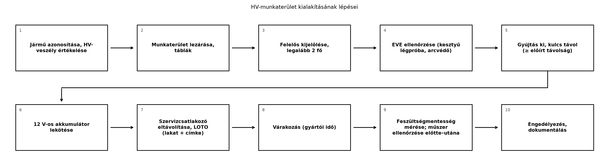

Egy hibrid jármű érkezik a műhelybe: a vezető klímahibát jelzett, a szerviztanácsadó szerint a klímakompresszort kell kicserélni. A szerelő kinyitja a motorteret, és szembetalálja magát a narancssárga kábelköteggel, az inverterrel és a nagyfeszültségű akkumulátor felirataival. Az első kérdés nem az, hogy hogyan kell kiszerelni a kompresszort, hanem hogy ki nyúlhat egyáltalán a járműhöz, és milyen védőfelszerelésben. A nagyfeszültségű (HV) rendszer hibás kezelése nem „lerántja a biztosítékot”, hanem áramütést, ívzárlatot vagy a vontatási akkumulátor hőmegfutását okozhatja. Ez a fejezet megtanítja felismerni a HV-veszélyeket, a jogosultsági szinteket és a munkaszervezés alapjait, hogy a tanuló biztosan tudja: melyik műveletet végezheti, és mikor kell jogosult szakembert hívnia.
Képzeljünk el egy tanműhelyi állást: a hibrid jármű előtt elkerített, kordonnal és sárga-fekete szalaggal leválasztott munkaterület áll. A jármű mellett „NAGYFESZÜLTSÉG! ÉLETVESZÉLY!” tábla, a padlón szigetelő szőnyeg. A jármű motorterében jól láthatók a narancssárga, vastag HV-vezetékek, az inverter fémburkolata és a hűtőkör csatlakozói. A munkaterületen két személy dolgozik: az egyik úgynevezett szigetelő kesztyűt és arcvédőt visel, a másik a leválasztott szervizcsatlakozót biztosítja visszakapcsolás ellen, és jegyzőkönyvet tölt. Ez a kép a HV-munka alapállapota: nem a sebesség, hanem a felkészültség és a lezártság a szabály.
Definíció. A gépjárművekben nagyfeszültségű (HV) rendszernek nevezzük azt az elektromos energiarendszert, amelynek üzemi feszültsége a típusjóváhagyási előírások szerint meghaladja a 60 V egyenfeszültséget vagy a 30 V váltakozó feszültséget (effektív érték; ellenőrizendő: ECE R100, a gyártói járműadat). A személygépjárművekben a hibrid és elektromos hajtás jellemzően 200–800 V DC tartományban dolgozik, ezért a javítóműhelyben ezt kell életveszélyes feszültségként kezelni.
A gyakorlatban nem a feszültség öl, hanem a testen átfolyó áram. Az áram nagyságát az Ohm-törvény adja:
ahol a testen átfolyó áram (A), a feszültség (V), az áramkörbe kapcsolt testellenállás (Ω). A bőr ellenállása erősen változik: száraz, épp bőrű kéznél 10 000 Ω felett is lehet, izzadt, sérült bőrnél vagy nagy felületű érintésnél 500–1000 Ω-ra csökkenhet.
Számítás. Tegyük fel, hogy egy szerelő puszta kézzel megérint egy 400 V-os HV-vezetéket, és a nedves keze, illetve a testén átfolyó áramút ellenállása 500 Ω.
Ez az érték már a súlyos, életveszélyes tartományba esik: a szív működésében akut zavar keletkezhet, a testben belső égés alakulhat ki. A példa azt mutatja, hogy a HV-rendszer feszültsége elegendő ahhoz, hogy a gyakorlatban előforduló alacsony testellenállásnál halálos áramot hajtson át.
A villamos áram élettani hatásainak nagyságrendje (tájékoztató, felnőttre, hosszirányú áramútra) a következőképpen foglalható össze:
| Áramtartomány (mA) | Hatás váltakozó áramnál (50 Hz) | Hatás egyenáramnál (tájékoztató) |
|---|---|---|
| 0,5–1 | érzékelési küszöb | 2–5 mA körül érzékelés |
| 10–20 | elengedési nehézség, izomgörcs | érzékelhető, fájdalmas izomhatás be- és kikapcsoláskor |
| 30–50 | légzési nehézség, szívritmuszavar kezdete | hosszabb behatásnál súlyos hatás (ellenőrizendő: IEC 60479-1) |
| 100 fölött | kamrafibrilláció, súlyos égés | életveszélyes; a kamrafibrilláció küszöbe magasabb, mint váltakozó áramnál, de 400 V-on a testen átfolyó áram ennél nagyságrenddel nagyobb lehet |
Az értékek tanulási példák (ellenőrizendő: IEC 60479-1 szerinti küszöbértékek és a gyártói biztonsági oktatás). Egyenáramnál az elengedési küszöb magasabb, mint 50 Hz-es váltakozó áramnál, de a nagy egyenfeszültség miatt a testen így is könnyen életveszélyes áram folyik. Ráadásul az egyenáram a testen áthaladva erős elektrolitikus és termikus szövetkárosodást okoz, és az izomgörcs miatt a sérült nem tud elengedni egy megfogott vezetéket.
Számítás. Egy második, gyakran félreértett helyzet: a szerelő azt hiszi, hogy a kikapcsolt gyújtású járműben „nincs feszültség”. Az inverter kondenzátora azonban a leválasztás után is tárolhat töltést. Ha a kondenzátor feszültsége 350 V, és a mérési ponton a szerelő testén átfolyó áramkör ellenállása 1000 Ω, az áram:
Ez is bőven a veszélyes tartomány. Ezért a feszültségmentesítés után mindig méréssel kell ellenőrizni a feszültségmentességet, és soha nem szabad feltételezni, hogy „biztos üres”.
A nagyfeszültségű rendszerben a másik fő veszélyforrás az ívzárlat. Ha egy terhelés alatt álló, nagy energiájú egyenáramú áramkört megszakítanak – például egy csatlakozót feszültség alatt húznak szét – a megszakítás pillanatában villamos ív keletkezik. Az ív hőmérséklete több ezer °C, erős ultraibolya-sugárzással, fémgőzzel és robbanásszerű hanghatással jár. A HV-akkumulátor rövidzárlati árama több száz, szélsőséges esetben ezer amper fölötti is lehet.
Számítás. Egy 400 V-os akkumulátor 0,1 Ω belső ellenállással kb. rövidzárási áramot hajthat (ellenőrizendő: típusadat). A hibahelyen (pl. ívben) leadott teljesítmény legfeljebb
Már 10 ms alatt ez 4 kJ energia, amely fémet olvaszt és súlyos égést okoz; ez a teljesítmény az ívben pillanatszerűen hővé és sugárzássá alakul. Éppen ezért tilos a HV-csatlakozókat terhelés alatt bontani; a gyártói eljárás a rendszer leállításával és a szervizcsatlakozó használatával először megszakítja az áramkört, majd a kondenzátorok kisülési idejét kivárva teszi lehetővé a biztonságos munkát.
HV-biztonság. A nagyfeszültségű rendszeren – a narancssárga vezetékeken, az inverteren, a hajtómotoron, a hűtőkörbe épített elektromos alkatrészeken, a töltőcsatlakozón – csak arra kiképzett, a munkáltató által feljogosított személy dolgozhat. A tanuló feszültség alatt álló vagy ismeretlen állapotú HV-rendszeren önállóan soha nem dolgozik. Minden HV-munka a gyártói feszültségmentesítési eljárással kezdődik, és csak a feszültségmentesség műszeres ellenőrzése után folytatódhat (részletesen: Feszültségmentesítés és a feszültségmentesség ellenőrzése). A mért feszültségmentességet dokumentálni kell. A 12 V-os akkumulátor leválasztása önmagában nem mentesíti a HV-rendszert.
A HV-munkavégzés nem „bátorság” kérdése, hanem képzéshez és írásbeli felhatalmazáshoz kötött. A gyakorlatban – a gyártói képzések és a munkáltató belső szabályzata alapján – három fő szintet különböztetünk meg:
| Szint | Jellemző megnevezés (példa) | Képzés, feltétel | Jellemző munkakör |
|---|---|---|---|
| 0. | Nem HV-képzett személy | nincs HV-képzés, általános munkavédelmi oktatás | Csak olyan munkát végez, amely a HV-rendszert nem érinti; HV-alkatrészt nem bonthat meg, narancssárga vezetékhez nem nyúlhat. |
| 1. | Feszültségmentesítésre jogosult HV-szakember (gyakran: HV-szakember) | gyártói vagy azzal egyenértékű tanfolyam, munkáltatói feljogosítás | Feszültségmentesítés, feszültségmentesség ellenőrzése, szerelés feszültségmentes állapotban, a HV-leválasztó reteszelése. |
| 2. | Feszültség alatt dolgozó HV-szakértő | különleges szaktanfolyam, gyakorlat, speciális EVE és munkaszervezés | Csak kivételes, elkerülhetetlen esetben végez munkát feszültség alatt, pl. aktív rendszer hibakeresése. |
A megnevezések és a képzési követelmények tájékoztató példák; a pontos hazai jogosultsági rendszert a hatályos munkavédelmi és villamos biztonsági előírások, valamint a gyártói képzési program határozza meg (ellenőrizendő: a mindenkori hazai jogszabályok és a járműgyártói tanfolyami követelmények). A tanuló alaphelyzetben a 0. szintbe tartozik, tehát HV-rendszeren csak jogosult oktató közvetlen felügyeletével, a gyártói eljárás szerint vehet részt gyakorlatban.
Előírás. A nagyfeszültségű járművek elektromos biztonsági követelményeit a típusjóváhagyásban az ENSZ-EGB 100. előírása (ECE R100) és a kapcsolódó EU-rendelet rögzíti; a járműjavító műhelyben végzett villamos munkára emellett a munkavédelmi törvény, a munkáltató kockázatértékelése és a vonatkozó villamos biztonsági szabványok (például az MSZ EN 50110 sorozat – ellenőrizendő) irányadók. A jogosultsági szintekhez a munkáltató belső szabályzata és a gyártói képzés előírásai adnak konkrét keretet.
A HV-munkát soha nem végzi egyetlen személy. Alapkövetelmény a legalább két személy jelenléte, akik közül legalább az egyik jogosult HV-szakember. A munkát irányító felelős személy – például a művezető vagy a HV-biztonsági felelős – kijelöli a munkaterületet, ellenőrzi a jogosultságokat és az EVE-ket, és csak ezután adhat munkavégzési engedélyt.
A munkaterületet egyértelműen el kell keríteni, és figyelmeztető táblákkal kell jelölni: „NAGYFESZÜLTSÉG! ÉLETVESZÉLY! Belépni tilos!” A területen csak a munkában részt vevő személyek tartózkodhatnak. A munkavégzés során a LOTO (Lockout-Tagout) elvet kell alkalmazni: a HV-szervizcsatlakozó eltávolítása után a csatlakozóhelyet reteszelik, lakatot és egyértelmű azonosító címkét helyeznek fel. A kulcsot a munkát végző személy őrzi, a visszakapcsolás csak a munka befejezése, a terület ellenőrzése és a felelős engedélye után történhet. Ezzel akadályozzák meg, hogy valaki véletlenül visszacsatlakoztassa a rendszert, amíg valaki a jármű alatt vagy a kábelek közelében dolgozik.
A kijelölt munkaterület elrendezését felülnézetben a következő helyszínrajz mutatja.
A rajzon a lényeg a helyek logikája: ami a munkához kell (szőnyeg, EVE, műszer, LOTO-tároló), az a kordonon belül van; ami a mentéshez kell (mentőkampó, tűzoltó készülék, elsősegély, vészleállító), az a kordon szélén, kívülről is elérhető; a második személy a kordonon kívül áll, rálátással a szerelőre. A táblák pontos feliratát a hazai előírás és a munkáltatói utasítás adja (ellenőrizendő). Az interaktív változatban rámutatásra az elem neve és a hozzá tartozó szabály jelenik meg.
A munkaterület kialakításának sorrendjét az alábbi folyamatábra foglalja össze:

A munkaterületen mentőhorog is szükséges: ez egy szigetelt nyelű eszköz, amellyel az áramütött sérültet az áramkörtől el lehet húzni anélkül, hogy a segítő is áramütést szenvedne. Az áramütött sérültet puszta kézzel megérinteni tilos; a teendőket a Tűzvédelem és elsősegély a járműjavító műhelyben alapján kell gyakorolni. A HV-rendszer közelében az általános műhelyi biztonsági szabályok mellett fokozottan ügyelni kell a nedvességre, az olajra és a fémtárgyakra, mert ezek csökkentik a szigetelési távolságokat.
Figyelem. A HV-munkaterület kialakítása előtt a járművet biztosítani kell elgurulás ellen: rögzítőfék, kitámasztó ék, a kerekek irányának ellenőrzése. Ha a jármű megemelésére van szükség, csak a gyártói emelési pontokon szabad alátámasztani, és a jármű alá csak biztonságosan alátámasztott állapotban szabad bemenni. A munkaterületen a feszültség alatti HV-részek takarásáról szigetelő takarókkal kell gondoskodni.
A HV-rendszeren végzett munka során az alábbi egyéni védőeszközöket kell használni és minden használat előtt ellenőrizni:
Az ábra kesztyűcímkéje a jellemző 0. osztályt mutatja (legnagyobb használati feszültség 1000 V AC / 1500 V DC; a 00. osztály csak 500 V AC / 750 V DC – ellenőrizendő: MSZ EN/IEC 60903, gyártói előírás). Az interaktív változatban rámutatásra az eszköz neve, a jelölés jelentése és a használat előtti ellenőrzés jelenik meg.
A kesztyű légtömörség-vizsgálatának lépéseit a következő képsor mutatja.
A selejtezés feltétele egyértelmű: ha a felfújt kesztyűből a levegő akár csak lassan is szökik, vagy a szemrevételezéskor repedést, vágást, ragadós felületet látunk, a kesztyűt jelölni és ki kell vonni. Az interaktív változatban a képsor lépésenként (⏮ ◀ ▶) játszható le.
A védőfelszerelés csak akkor véd, ha rendszeresen ellenőrzik, szárazon, szennyeződéstől mentesen tárolják, és a lejárati vagy vizsgálati időpontokat betartják (ellenőrizendő: a kesztyűk és szerszámok vizsgálati ciklusai a gyártó és a munkáltató előírása szerint). A hibás EVE-t ki kell vonni, és nem szabad „csak ma még” használni.
Egy márkafüggetlen műhelyben hibrid jármű hűtőrendszerét javítják. A munkalap szerint a kisnyomású hűtőköri csövet kell cserélni, és a cső az inverter hűtőköréhez csatlakozik. A fiatal szerelő úgy gondolja, hogy „csak egy csövet csavarok ki, nem érek a kábelhez”. A művezető leállítja: a cső környezetében narancssárga HV-vezetékek futnak, és az inverter burkolata is HV-tartalmú alkatrész. A munka elvégzéséhez a járművet a kijelölt HV-munkaterületre viszik, a járművet feszültségmentesítik, a szervizcsatlakozót reteszelik, és csak ezután kezdik a csőszerelést. A tanulság: a HV-veszély nem csak a közvetlen vezetékérintés; a cső, a szerszám, a fémház is vezethet, és a munkatérben való mozgás közben is érinthetünk feszültség alatt lévő részt. A határt mindig a kockázatértékelés, nem a szerelő „óvatossága” jelöli ki.
1. feladat (A) Számítsa ki a testen átfolyó áramot, ha egy 600 V-os egyenfeszültségű vezetékhez izzadt, vékony bőrű kézzel hozzáérve a testellenállás 600 Ω. Életveszélyes-e az eredmény?
2. feladat (A) Sorolja fel a három fő HV-jogosultsági szintet, és mindegyikhez írjon egy jellemző mondatot.
3. feladat (B) Az alábbi munkalépéseket helyezze helyes sorrendbe egy HV-jármű fékfolyadék-csere előtti munkaterület-előkészítésekor: (a) feszültségmentesség ellenőrzése, (b) munkaterület lezárása és táblázás, (c) EVE-k ellenőrzése, (d) jármű azonosítása és kockázatértékelés, (e) HV-leválasztó reteszelése LOTO szerint.
4. feladat (B) Egy szerelő azt mondja: „A gyújtást kikapcsoltam, a kulcsot levettem, tehát a narancssárga vezeték nem lehet feszültség alatt. Megfoghatom puszta kézzel is.” Mi a hiba az érvelésében?
5. feladat (C) Hasonlítsa össze az egyenáramú és a váltakozó áramú áramütés élettani hatását: miért veszélyes a HV-rendszer egyenfeszültsége is, annak ellenére, hogy az elengedési küszöb egyenáramnál magasabb?
6. feladat (D) Műhelyi eset: a munkatársa egy hibrid járműnél áramütést szenved, és összeesik. Milyen lépéseket tesz, és milyen sorrendben? A válaszban hivatkozzon a Tűzvédelem és elsősegély a járműjavító műhelyben és a Feszültségmentesítés és a feszültségmentesség ellenőrzése fejezetre.
Önellenőrzés – válaszok.
1. feladat.
Adott:
,
.
Keresett:
.
Ez az érték a halálos tartományban van, kamrafibrillációt és súlyos
égést okozhat. ∎
2. feladat.
0. szint: nem HV-képzett személy – nem bonthatja meg a HV-rendszert,
narancssárga vezetékhez nem nyúlhat.
1. szint: feszültségmentesítésre jogosult HV-szakember – elvégezheti a
feszültségmentesítést, mérheti a feszültségmentességet, szerelhet
feszültségmentes állapotban.
2. szint: feszültség alatt dolgozó HV-szakértő – speciális képzéssel és
EVE-vel, kivételes esetben dolgozhat aktív rendszeren.
(A megnevezések példák, a pontos elnevezést ellenőrizni kell.)
3. feladat. Helyes sorrend: d) jármű azonosítása és kockázatértékelés → b) munkaterület lezárása és táblázás → c) EVE-k ellenőrzése → e) HV-leválasztó reteszelése LOTO szerint → a) feszültségmentesség ellenőrzése. A munka csak ezután kezdhető. ∎
4. feladat. A gyújtás kikapcsolása nem szünteti meg a HV-akkumulátor és az inverter közti feszültséget; az inverter kondenzátorai a kulcs levétele után is tárolhatnak energiát, és az energiarendszer a szervizcsatlakozó leválasztásáig, illetve a várakozási idő leteltéig aktív lehet. Puszta kézzel megfogni tilos, mert a „kikapcsolt” jármű is vezethet áramot.
5. feladat. A váltakozó áram 50 Hz-en már 10–20 mA-nél erős izomgörcsöt, elengedési nehézséget okoz, és 100 mA fölött kamrafibrillációt. Az egyenáram elengedési küszöbe magasabb, de a HV-rendszer feszültsége (200–800 V) miatt a testen átfolyó áram az 500–1000 Ω-os gyakorlati ellenállásoknál is eléri a több száz mA-es tartományt. Ráadásul az egyenáram hosszú ideig folyó áram esetén súlyos belső égési sérüléseket okoz, és a megfogott vezetéket az izomgörcs miatt a sérült nem tudja elengedni. Tehát az egyenfeszültségű HV-rendszer ugyanolyan halálos lehet, mint a váltakozó áramú hálózat.
6. feladat. Az áramütött személyt tünetmentesség
esetén is orvosi vizsgálatra kell vinni (késői szívritmuszavar
lehetséges). Sorrend:
1. Saját biztonság: a sérültet puszta kézzel nem érintjük; a rendszert
azonnal feszültségmentesítjük, ha lehetséges, vagy a sérültet szigetelt
mentőhoroggal húzzuk el.
2. Kiáltással segítséget kérünk, a másik személy értesíti a felelőst, és
hívja a 112-t.
3. Az alapvető elsősegélynyújtást megkezdjük a Tűzvédelem és elsősegély a járműjavító műhelyben
szerint; áramütött sérültnél a keringés és a légzés ellenőrzése, szükség
esetén újraélesztés.
4. A munkaterületet továbbra is lezárva tartjuk, a balesetet
dokumentáljuk, és a HV-rendszer állapotát a Feszültségmentesítés és a feszültségmentesség
ellenőrzése fejezet szerint ellenőrizzük.
A HV-baleset súlyossága miatt a munkát azonnal le kell állítani, és a
hatósági, munkavédelmi bejelentési kötelezettséget a munkáltatónak kell
teljesítenie.
A nagyfeszültségű (HV) rendszer veszélyeit a testen átfolyó áram okozza: az áram a feszültség és a testellenállás hányadosa, és a gyakorlatban előforduló nedves bőr esetén 400–800 V hatására több száz mA is folyhat, ami életveszélyes. A HV-rendszer további veszélye az ívzárlat, amely nagy rövidzárlati áramból és több ezer °C-os ívből származik; ezért a csatlakozókat tilos terhelés alatt bontani. A munkavégzés csak meghatározott jogosultsági szinteken történhet: nem HV-képzett személy, feszültségmentesítésre jogosult HV-szakember és feszültség alatt dolgozó HV-szakértő (a megnevezések ellenőrizendők). A tanuló alaphelyzetben nem jogosult HV-munkára. A munkát legalább két személy, kijelölt felelős irányításával, elkerített és táblázott munkaterületen végzi, LOTO-reteszeléssel. Az EVE-k közé tartozik a szigetelő kesztyű (légtömörség-vizsgálattal), mechanikai védőkesztyű, arcvédő, szigetelt szerszám, szigetelő takaró és lángálló ruha. Továbbvitt eredmény. A HV-veszélyek, a jogosultsági határok és a munkaszervezési szabályok közvetlenül szükségesek a Feszültségmentesítés és a feszültségmentesség ellenőrzése alfejezethez: ott ezekre építve végezzük el a HV-rendszer biztonságos lekapcsolását és mérését.